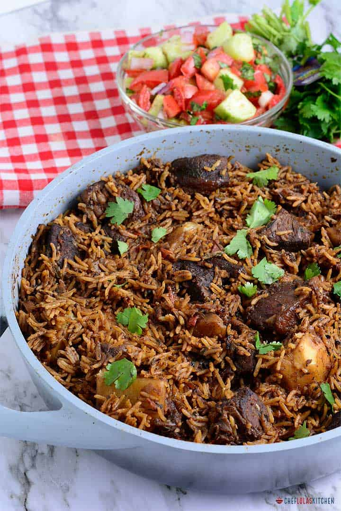

Kenyan Beef Pilau

Description
This is one of my favourite recipes! Pilau is basically rice that has been cooked with a mix of spices generally referred to as pilau masala. It is pretty versatile as you can add any meat or vegetables to the rice and the rice is usually served
with a salad called kachumbari that is made up of onions, tomatoes, lemon juice, and coriander leaves.
In Kenya, pilau was mostly associated with the Coastal region, which has a strong Arab/Persian influence due to the trading that happened during the colonial era. It is assumed that the spices were introduced to this region then. However, the people
made pilau their own therefore it is quite different compared to pilau found in other parts of the world e.g. in India.
Okay, so let's get to it, shall we?
Ingredients (Serving: 6 people)
This recipe has been adapted from https://cheflolaskitchen.com/east-african-pilau/
Pilau Masala
- 1 tsp cloves
- 2 tbsp cumin seeds
- 1 stick cinnamon
- 1/2 tbsp black peppercorn seeds
- 12 pods cardamon
Pilau Rice
- 2 cups of white rice (basmati recommended)
- 5 potaotes (peeled and cut into cubes)
- 1/4 cup cooking oil
- 2 red onions (diced)
- 4 garlic cloves (minced)
- 2 tbsp minced ginger
- 1 1/2 tbsp pilau masala
- 2 cups of beef stock
- 2 cups of water
- 1/4 cup fresh coriander (chopped)
- 2 kgs beef sirloin (cubed)
- 3 Roma tomatoes (diced)
- 1 tbsp tomato paste
- Salt to taste
Kachumbari
- 2 red onions (diced)
- 6 Roma tomatoes (diced)
- 1/4 cup fresh coriander (chopped)
- 1 tbsp lemon juice/vinegar
- Salt to taste
Steps
First of all, boil the beef for around 5-10 minutes over low-medium heat and while the beef is cooking, prepare the pilau masala:
- Roast the cumin, coriander, black peppers, cinnamon, cardamon, and cloves over low heat until fragrant
- Blend the mixture until smooth
- Place 1 1/2 tbsp of the pilau masala in an small bowl and store the rest in an airtight container for up to 3 months or refrigerate for up to 6 months
After preparing the pilau masala, you can move on to preparing the rice:
- Place the boiled beef in a separate bowl and save 2 cups of the beef stock for later use
- Heat up a stockpot on medium-high heat then add cooking oil and heat it up until hot
- Add the diced onions to the oil and fry until the onions start to turn golden brown (browning of the onions give the rice its distinct colour)
- Add the boiled beef into the stockpot and fry until both the beef and onions have browned
- Add the pilau masala, garlic, and ginger and fry for about a minute until fragrant
- Add the diced tomatoes and cook until the tomatoes form a paste then add the tomato paste and a splash of water
- Add the potatoes and stir for about a minute then add the 2 cups of water and 2 cups of beef stock into the stockpot and allow to boil
- Add the rice and leave it to boil then reduce the heat to low and cover with a lid until most of the water is absorbed
- When most of the water is absorbed by the rice, remove the lid and cover the rice with aluminium foil then put the lid back on (the foil helps steam and dry the rice)
- Once the rice is dry and the potatoes are well cooked, remove the foil and fluff the rice using a fork
- After the rice is ready, prepare the Kachumbari:
- Mix the diced onions, tomatoes, and coriander
- Add the lemon juice and salt to taste
- Leave to rest in the fridge for about a minute
- Serve the pilau, with Kachumbari, while hot. Karibu!